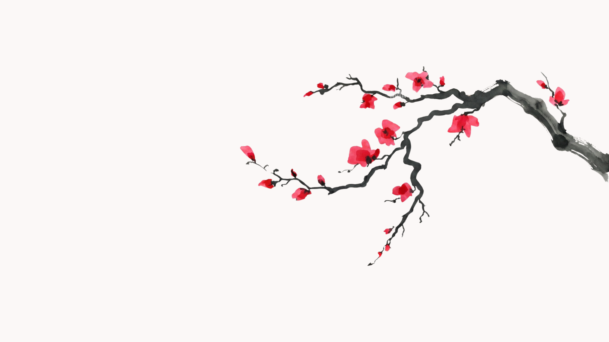
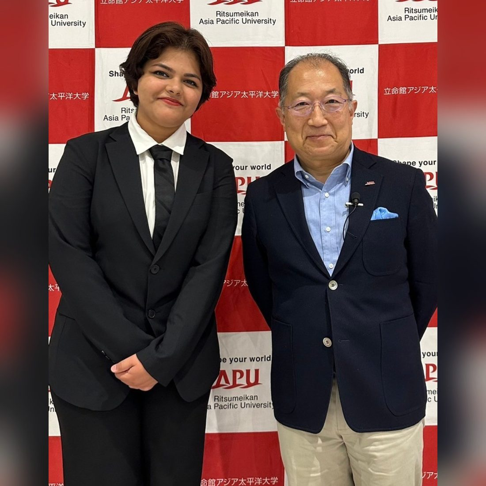
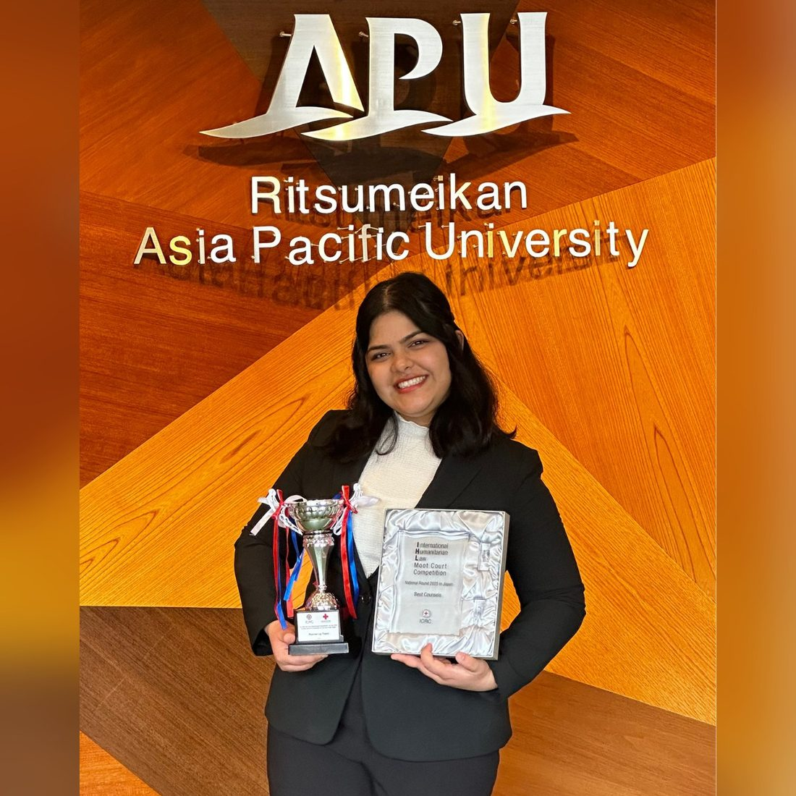
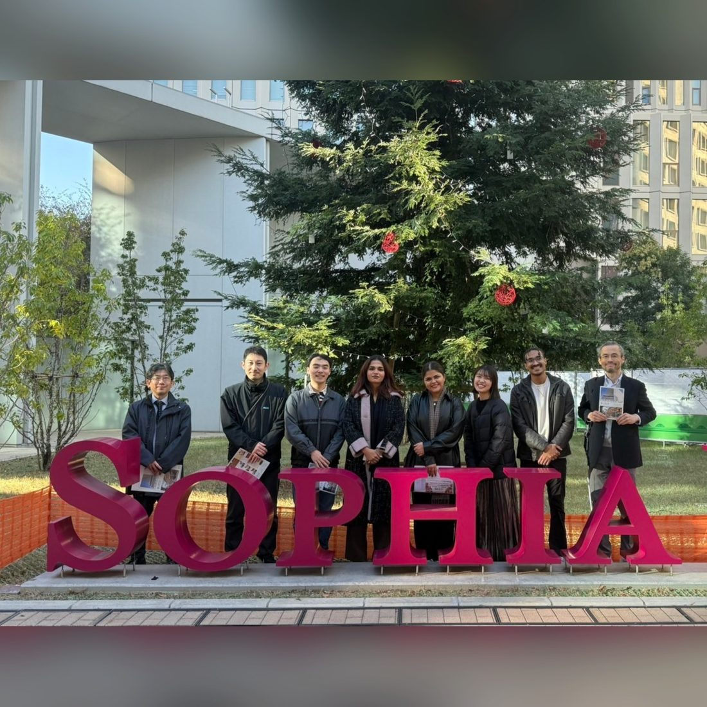

Strong universities, without the usual tuition
Japan offers respected education at costs that compare favourably with the US, UK, Canada and Australia.

Japan Education Consulting
Japan Bound Education is an educational consultancy dedicated to helping high school students pursue higher education at Japanese universities. We provide comprehensive guidance throughout the entire journey, from university selection to pre-departure support.
なぜ今、日本か
Japan offers a different path to an international education. While the US, UK, Canada and Australia remain popular choices, Japan offers students another opportunity: respected education, comparatively accessible costs, scholarship opportunities, and the chance to gain experience in a country where international talent is becoming increasingly important.
Japan offers respected education at costs that compare favourably with the US, UK, Canada and Australia.
Government, university, local and private scholarship programs can meaningfully reduce the cost of studying in Japan.
Japan's demographic and workforce challenges are creating growing opportunities for international graduates with the right skills.
Study, learn the language, work part-time where permitted, build your network and gain experience while you're here.
You don't necessarily need advanced Japanese to start. A growing number of Japanese universities offer degree programs taught entirely in English.
For students who want to stay longer, Japan can be more than a place to earn a degree. It can become a place to build professional experience and explore a career.
The question isn't simply “Can I study in Japan?”
It's “Could Japan be the right place for my future?”
That's what Japan Bound Education helps you figure out.
For Parents
Sending your child abroad is a major decision. We help you understand what studying and living in Japan actually means, so you can make that decision with confidence.
Japan is consistently recognized as one of the safest countries in the world, with low crime, reliable public transportation, and a well-organized society. It gives students the opportunity to experience independence while living in a secure environment.
Japan is becoming increasingly international, with students and professionals arriving from around the world. Regardless of their nationality, culture, or religious background, students can build their own community while experiencing Japanese society.
Studying in Japan can be more affordable than many traditional study-abroad destinations, particularly when it comes to tuition and living costs. With careful planning and the right university or scholarship, Japan can offer a high-quality education at a manageable cost.
Yes. Japan offers a wide range of scholarships and tuition-reduction opportunities, including government, university, local and private scholarships. The challenge is knowing which opportunities your child is eligible for and how to apply for them.
Studying in Japan can be more than earning a degree. Students can develop Japanese language skills, gain international experience and explore opportunities to begin their careers in Japan after graduation.
Japan Bound Education supports students throughout the journey, from choosing the right university and preparing applications to understanding life in Japan and getting settled after arrival. Your child doesn't have to figure everything out alone.
You don't have to make the decision alone.
Let's explore whether Japan is the right choice for your child.
Not a stack of vague promises: seven concrete pieces of work, from your first shortlist to your first month settled in.
We start with you, not a university.
We learn about your academic background, interests, budget, Japanese level and future goals to understand what kind of path in Japan could actually make sense for you.
Not every university is right for every student.
We research universities, programs, cities, admission requirements and costs to help you find options that match your goals, qualifications and budget.
Know what you're committing to before you commit.
We help you understand tuition, living expenses, accommodation and available scholarships or tuition reductions, so you and your family can make an informed financial decision.
Your application should tell your story.
From application strategies to SOPs and documentation, we help you present your experiences, goals and strengths clearly and authentically.
Getting accepted is only part of the journey.
We help you prepare for interviews, understand the visa process, organize important documents and get ready for the transition from your home country to Japan.
Moving to another country is a big step.
Before you arrive, we'll help you understand accommodation, living costs, transportation, essential procedures and what to expect from everyday life in Japan.
Our goal isn't just to get you to Japan.
We want you to feel prepared once you get here. We help you understand your new environment, find useful resources and navigate the early stages of student life in Japan.
We don't choose your future for you. We help you understand your options, make informed decisions and build a path that fits you.



With the President of Ritsumeikan Asia Pacific University
A note from the founder
I was once a 16 years old girl, passionate about studying in Japan, figuring out the application process, visa requirements, logistics, etc all alone. Eventually, I arrived in Japan with a suitcase of basic necessities and endless hope. Over time, through mistakes, breakthroughs, and a lot of adapting, I transformed into someone who was independent, saw a piece of the world, and learned to pave my own way.
I built projects, represented the student body of my university, competed in international competitions, and so much more. But there was always something I noticed. I watched other students go through the same struggle I did. And I kept thinking: this doesn't have to be so hard.
So I started helping. Just informally at first: answering messages, reviewing essays, walking someone through visa requirements at midnight. But the more I did it, the more I realized how much people needed this. Not complicated advice. Not a sales pitch. Just real talk from someone who's been here, who understands where you're coming from, and who knows what's actually possible.
I want to make that journey easier for you. Not by oversimplifying the process, but by making sure you're not walking it alone. You deserve to focus your energy on growth, not on figuring out logistics.
Japan opened doors for me I didn't know existed. Now it's your turn.
Not sure where to start? Let's talk about your goals, budget, and options, and help you understand what your next step could be.
よくある質問
Students and parents tend to worry about different things, so we've split the answers.
Not necessarily. Japan has universities and programs taught in English, so you can begin your studies without advanced Japanese. However, learning Japanese can make everyday life easier and open up more opportunities in Japan.
The cost depends on your university, city, accommodation, and lifestyle. Japan can be more affordable than many traditional study destinations, and scholarships and tuition reductions can further reduce the cost.
Yes. Japan offers government, university, local, and private scholarships, as well as tuition-reduction opportunities. We help you identify opportunities that may fit your academic profile and goals.
International students may be able to work part-time with the required permission and within the limits set by Japanese regulations. Part-time work can provide valuable experience and help with some living expenses.
Yes. International graduates can explore employment opportunities in Japan and may be able to transition to an appropriate work status if they meet the relevant requirements. Your opportunities will depend on your skills, qualifications, Japanese ability, and field.
That's exactly where we can help. We look at your academic background, interests, budget, and future goals to research suitable universities and programs and help you build a realistic path to Japan.
Japan is widely regarded as one of the safest countries in the world, with low crime and reliable public infrastructure. It offers students a secure environment while allowing them to develop independence and confidence.
Japan offers quality education, scholarship opportunities, relatively manageable study costs, and the possibility of gaining international experience and exploring career opportunities after graduation. We help you understand the options before making a major financial decision.
Costs vary depending on the university, city, accommodation, and lifestyle. We help families understand tuition, living expenses, accommodation, and other expected costs so they can plan their finances realistically.
Yes. There are English-taught programs available at Japanese universities. We also encourage students to learn Japanese alongside their studies because it can make daily life easier and expand future opportunities.
For students who want to stay in Japan, graduation can be the beginning of a professional career. Eligible graduates can explore employment opportunities and potentially transition to an appropriate work status based on their qualifications and circumstances.
Japan Bound helps students navigate the process from university research and application preparation to visa guidance, pre-departure planning, and adjusting to life in Japan. We help them understand what to do at each stage so they don't have to figure everything out alone.
Reach us directly, or book a free consultation and we'll come to you.
